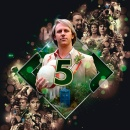
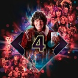

1 серия. S19E06. Землетрясение - Earthshock (1982 - 1 ноября 2023)Доктор и Тиган вспоминают своё приключение против Киборгов, чтобы спасти Землю и потерянного друга.
 2 серия. S06E02. Вор разумов - The Mind Robber (1968 - 1 ноября 2023)
2 серия. S06E02. Вор разумов - The Mind Robber (1968 - 1 ноября 2023) Джейми и Зои вспоминают свою встречу с роботами, механическими солдатами и Медузой в Стране Фантазии, управляемой таинственным мастером.

Доктор и Пери вспоминают свой конфликт на горнодобывающей планете Варос: мире, который развлекает своих людей садистскими телевизионными передачами.
 4 серия. S10E01. Три Доктора - The Three Doctors (1973 - 1 ноября 2023)
4 серия. S10E01. Три Доктора - The Three Doctors (1973 - 1 ноября 2023) Джо Джонс и Клайд Лангер вспоминают, когда Повелители времени вызвали трёх Докторов для борьбы с ужасным противником из прошлого Галлифрея.
 5 серия. S02E09. Вмешивающийся во время - The Time Meddler (1965 - 1 ноября 2023)
5 серия. S02E09. Вмешивающийся во время - The Time Meddler (1965 - 1 ноября 2023) Стивен и Вики вспоминают своё первое приключение, сражаясь с Монахом, который путешествует во времени и собирается изменить ход истории в 1066 году.

Доктор и Эйс вспоминают свою битву против древнего зла во время Второй мировой войны, где проклятие викингов возвращает мёртвых к жизни.


7 серия. S13E03. Пирамиды Марса - Pyramids of Mars (1975 - 20 июня 2024)Доктор и Руби останавливают битву, чтобы задуматься о своих недавних приключениях.